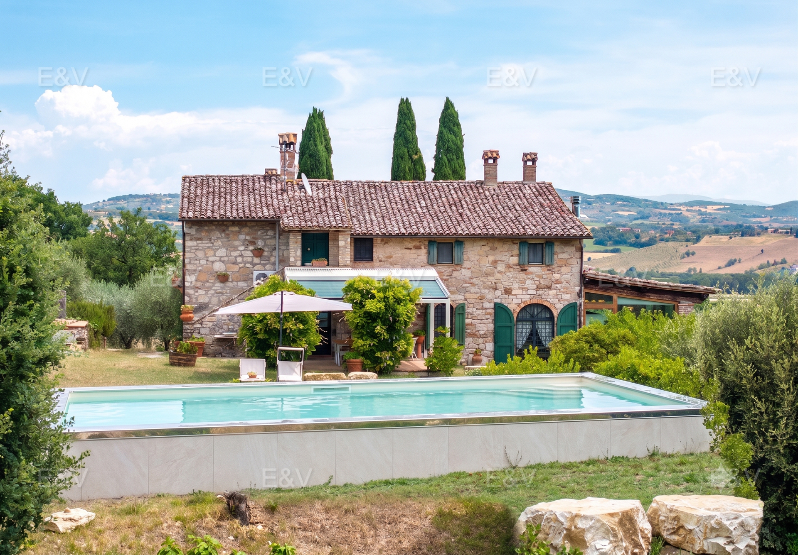
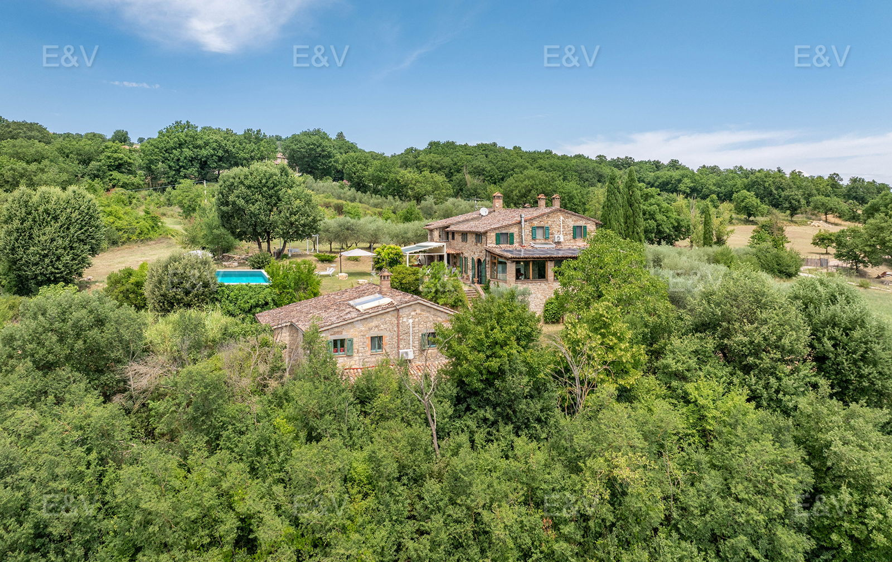
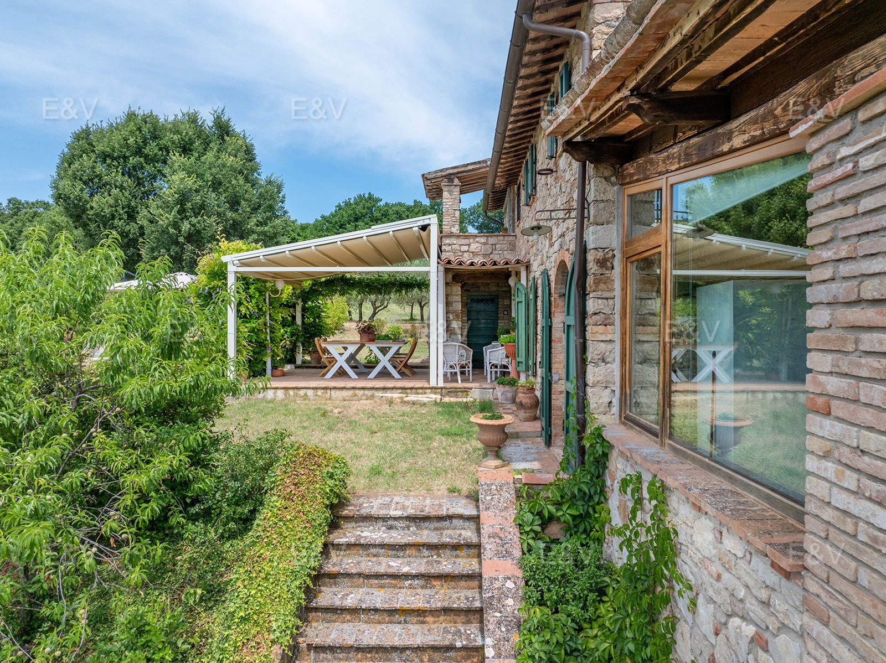
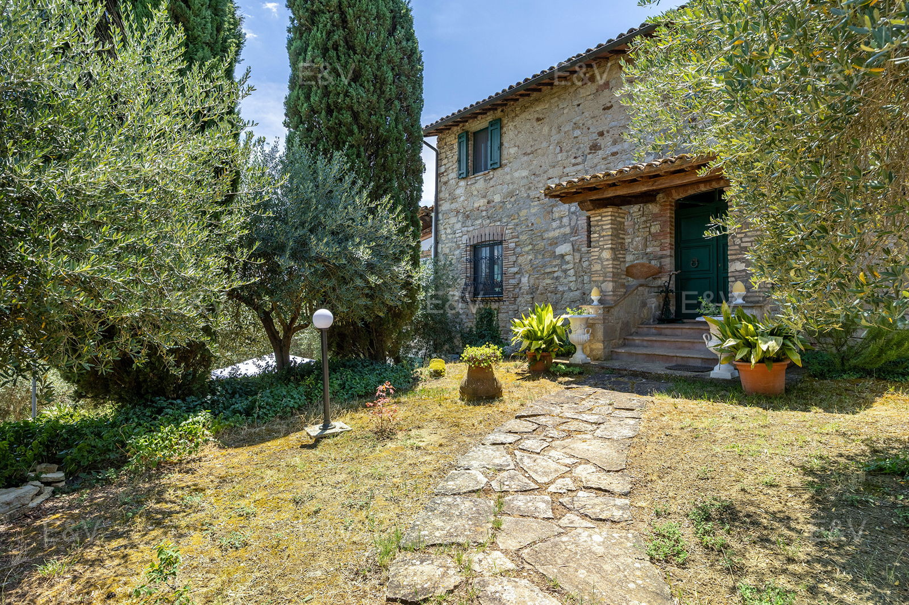
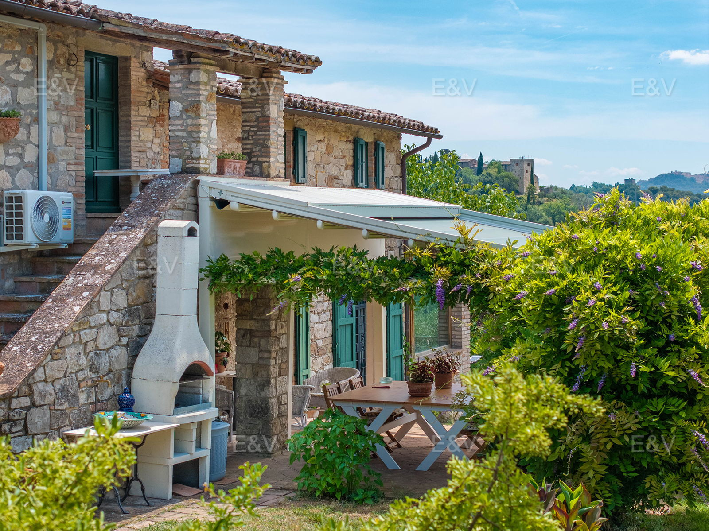
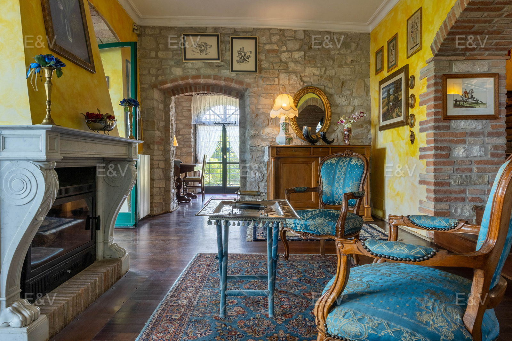
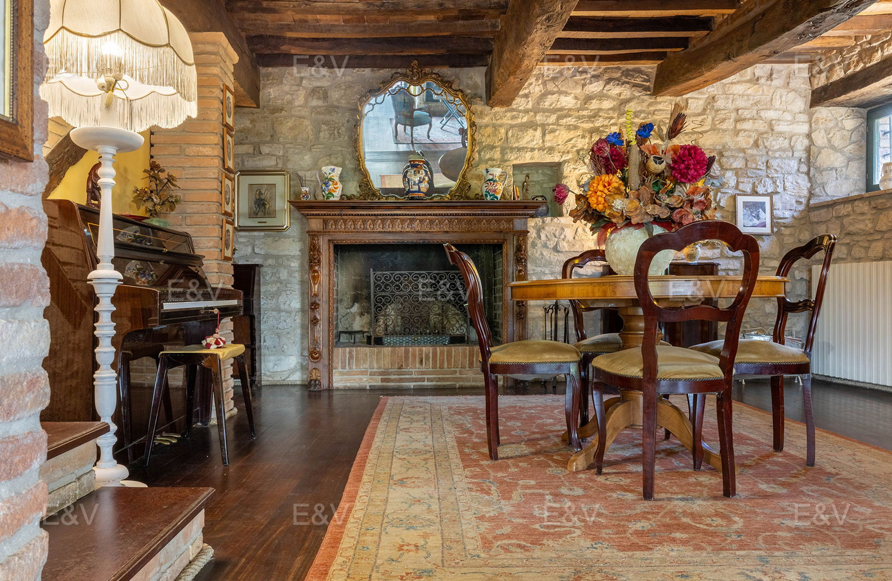

€1.120.000
Monte Castello di Vibio, Umbria
Open the listingLocal-stone casale with terracotta and beams, a separate 100 m² guest house and a built 10×5 pool (PVC, lights, chlorine) 15 m from the house — the Todi-view character brief at scale. Habitable now (condition veryGood).
Opened 31 Aug 2026. Listing Offer €1,120,000 ACTIVE. 6 bed / 5 bath / 350 m² (250 main + 100 annex) / 46,000 m². Pool described in the body (hasSwimmingPool flag not set). Independent of todi-pietra W-04B7UG (€730k, different casali). Not a bargain at €1.12M.





